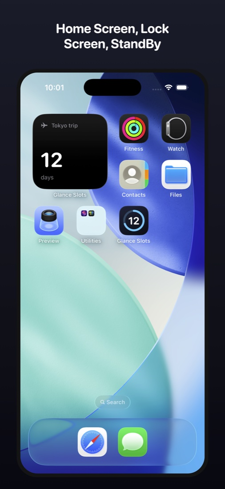
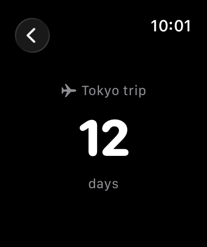
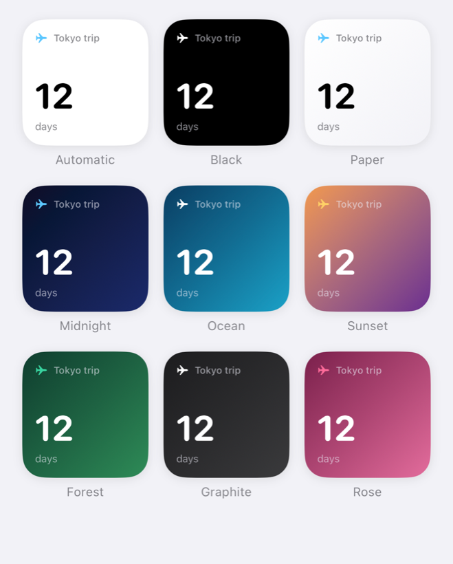
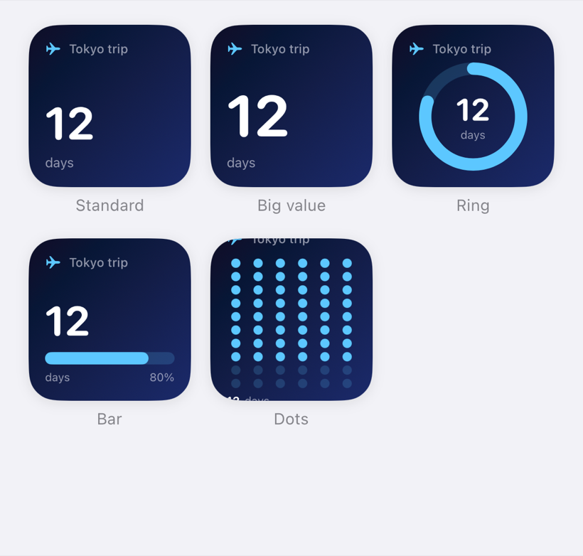
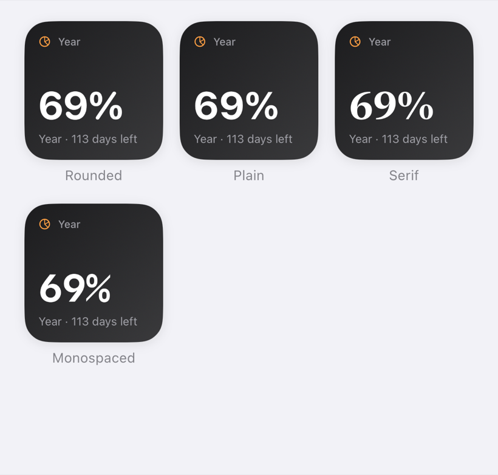
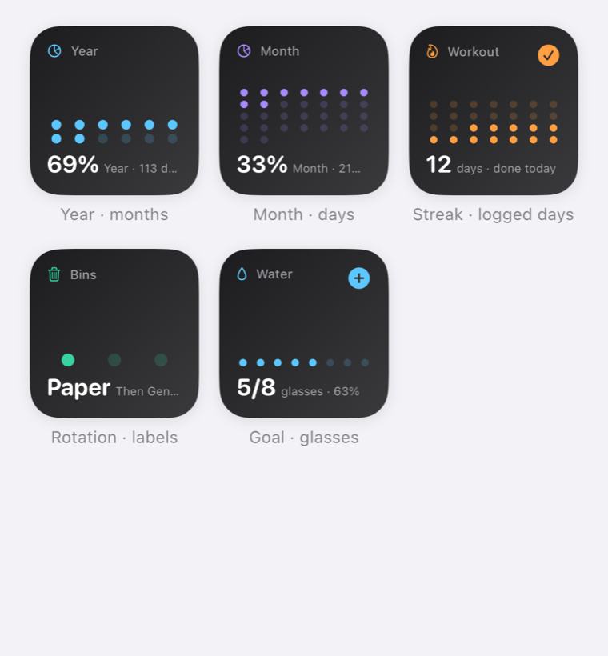
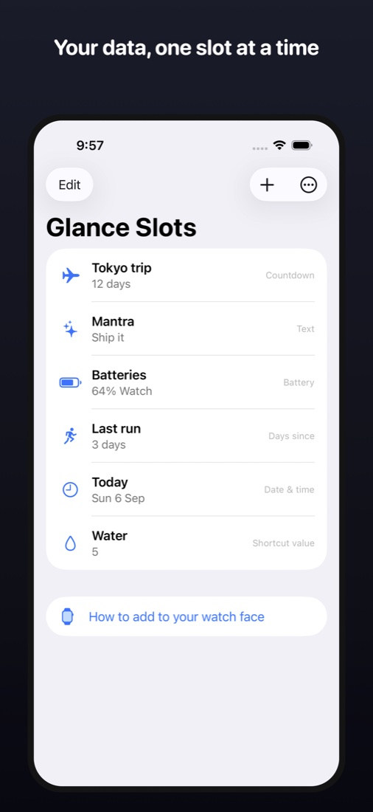
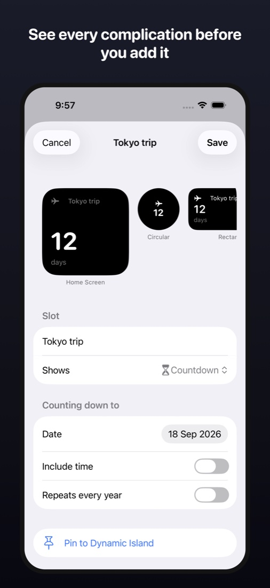
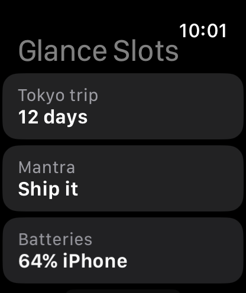
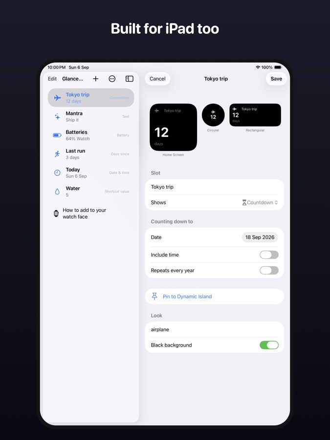

Your own data on every surface you glance at.
A countdown, a streak, a line of text, your battery, your next event, or any number a Shortcut writes. As Apple Watch complications, in the Smart Stack, and as iPhone widgets. Set up in 30 seconds.


Create a slot. It shows up wherever you put it.
Pick one of 27 ready-made ideas or start from scratch, adjust, save. Everything updates the moment you do.
Countdown & days since
“12 days” to the trip, “3 days” since the last run. Flips at midnight, not 24 hours after you made it.
Text
A mantra, a gate number, a name. Big and readable on the smallest complication.
Battery
Your Watch, iPhone and iPad side by side, including the Watch level iOS 26 hides behind “Automatic”.
Next event
Your next calendar event, including all-day ones. Read on-device, never uploaded.
Shortcut value
Steps, water, a tally, a build number: anything a Shortcut writes with “Set Slot Value”.
Streak
“12 days · done today”. Log a day with one tap on the widget, the Action button, or the Dynamic Island.
Progress
“47 / 100 pages”, “€1,240 of €5,000”, as a gauge on your wrist. Add one with the widget button, the “+1” control, or a Shortcut.
Time progress
How much of the year, month, week, or day is gone, with the days left.
Web value
A number or text from any HTTPS page: a price, a package status, your server’s health. JSON key path or a pattern, refreshed on your device.
Rotation
Which bin goes out this week, A or B day, day or night shift: a repeating cycle of labels with the next change.
Next birthday
Days until the next birthday in your Contacts, with the name. Read on your iPhone, never uploaded.
Photo
One photo edge to edge on your Home Screen and in StandBy, with a caption.
AI usage
Your Claude Code or Codex 5-hour window as a gauge, with the reset time and the weekly window. No login token ever leaves your Mac.
Scheduled
One complication, two jobs: your commute in the morning, your bedtime streak at night. It swaps at the hours you choose.
Start from an idea, then shape it.
30 templates
Vacation countdown, workout streak, water, reading goal, bin day, sprint, year progress, Claude usage, open issues, a price, a black clock, last haircut. Pick one, adjust, save. Each row shows the real widget, not an icon.
Looks
Nine backgrounds, five layouts including a progress ring, four typefaces and nine accent colours. Show or hide the name, details and symbol. See them all below.
Any symbol
Choose from 150 curated SF Symbols in nine groups, search them, or type any SF Symbol name.
See where each slot lives
Every slot shows where it is placed: Home Screen, Lock Screen, watch face or Smart Stack, on which device, in which size. And the app itself can show your slots as the widgets they are, instead of a list.
Never loses your dates
Your slots sync between your devices through your own iCloud, and the app keeps ten backups on the device. Each one says where it came from and what is inside, and restoring backs up what you have now first, so it is always undoable.
Reminders
A nudge before the date, or a daily one at your chosen time. Local notifications from your device: no account, no server, no push.
A guided start
A five-screen welcome tour on first launch, and again any time from Settings. Settings also holds your purchase, export and import of your slots, and the how-to for every surface.
Nine backgrounds, five layouts, four typefaces.
These are screenshots of the app drawing the real widget, not mock-ups. Mix them with nine accent colours and any of 150 symbols.




Every slot, on every surface Apple lets an app reach. And your Mac.
Apple Watch complications
All four families: corner, circular, rectangular, inline. On watchOS 26 you pick the slot right in Edit Face, so three different slots can share one face.
Smart Stack
Slots rise on their own when they matter: a countdown in its final week, a streak in the evening before it breaks, a birthday three days out, a rotation the day it changes.
Home Screen, Lock Screen, StandBy
Small and medium widgets and a board of several slots. Backgrounds that follow Light and Dark Mode, pure black for StandBy, gradient presets, accent colours, and live “+1” and “done” buttons.
Dynamic Island
Pin any slot and it lives in the Dynamic Island, on the Lock Screen and in StandBy. Start and stop it from Shortcuts.
“+1” control
A tally, progress, or streak button for Control Center, the Lock Screen, and the Apple Watch Ultra Action button.
Change a widget without leaving the app
Add one widget and leave it on “Featured”. After that, open any slot and tap “Show on my Home Screen”: that widget changes at once, on your iPhone, your iPad and your watch face.
Mac menu bar
A small companion app puts your slots in the Mac's menu bar and adds the Mac's own battery to your battery slot. Your slots arrive through your iCloud; nothing is edited there and no server is involved.
Shortcuts actions
Set, Add to, and Get Slot Value, Tally +1, Log Streak Today, Refresh Slot, Pin and Unpin Slot. Automate everything.
iPhone, iPad and Apple Watch. Twelve languages.




The whole app, narrated.
Buy once. Glance forever.
No subscription, no account, no server. Your slots live on your devices and in your own iCloud.
Free
Try it properly.
- One slot
- Every complication family and widget
- Shortcuts actions
Lifetime Unlock
Everything, forever.
- Unlimited slots, all sixteen kinds
- Family Sharing
- All future updates
The things people ask first.
Does it drain my battery?
No. Complications and widgets are timeline-based; nothing polls in the background. The battery relay happens only while the app is open.
Does the Watch work without the iPhone nearby?
Yes. The Watch keeps its own copy of your slots.
Can it make custom watch faces?
No app can; Apple does not allow it. Glance Slots gives you the next best thing: your own data in every complication slot of the faces you already use.
How does the AI usage slot get its numbers?
A small script on your Mac reads the files Claude Code and Codex already write and saves a tiny JSON file to iCloud Drive or a private Gist. A Shortcut or the slot’s feed URL brings it to the phone. Percentages and reset times only, never a token. Setup in Support.
Can it show AirPods battery?
Not yet. Apple provides no public API for AirPods battery. If an app promises it, ask how.
Can the app put a widget on my Home Screen for me?
No app can. Apple gives no way for an app to place a widget, so the first one is always added by hand: hold the Home Screen, tap Edit, then Add Widget. Glance Slots removes the repeat trips instead. Leave that widget on “Featured”, and from then on you choose what it shows from inside the app, on every device at once.
What happens if I lose my phone?
Your slots are mirrored to your own iCloud, so a new device picks them up when you sign in. The app also keeps the last ten daily backups on the device itself, and you can export everything as a small JSON file at any time. Restoring a backup saves your current slots first, so it can always be undone.
Do reminders need an account?
No. Reminders are ordinary local notifications scheduled by your device. Nothing is sent anywhere, and there is no push server. A countdown reminds you a chosen number of days ahead; a streak or a goal can nudge you daily at a time you pick.
How does it know where a slot is placed?
iOS and watchOS tell an app which of its widgets are on the Home Screen, Lock Screen, StandBy, watch faces and the Smart Stack, and which slot each one shows. The watch relays its list to the phone. Control Center controls are the one surface Apple does not report.
Where are export, import and restore?
Tap the gear on the slot list. Settings holds Unlock and Restore purchase, Export and Import slots, the welcome tour, the watch-face how-to, support and the privacy policy.
What do I need?
iOS 26. Apple Watch features need watchOS 26. Works on iPad too.
What does it collect?
Nothing. No analytics, no accounts, no server. The App Store privacy label says “Data Not Collected” because it is true. Privacy policy.